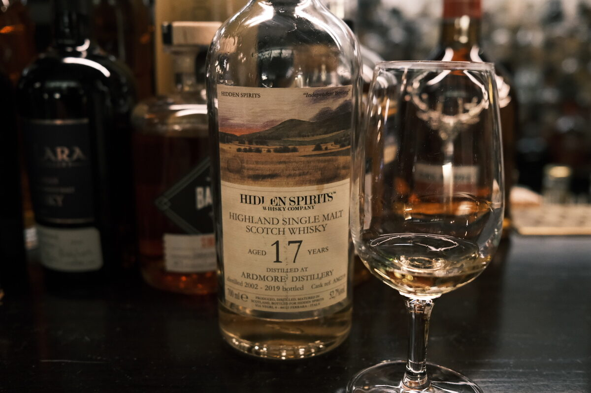

Ardmore 2002 Hidden Spirits 17 years 52.7% (ex-bourbon hogshead)
I really, really like Ardmore. And I really, really like Hidden Spirits. And I really, really like refill hoggies. What could go wrong? Cask AM219.
Colour Light gold.
Nose Surprisingly waxy. Dried apples, apricot delight. Berry jams and fruit roll ups (memories of the Starwards? Hey, that’s refill magic). Herbal, almost amaro-esque. Grassy and floral. Apples and pears, natural cider. With water, more wax, grassy, floral.
Palate Light, delicate. White wine acidity, floral and grassy. Quite juicy on account of that. Earthy malt, only a hint of woody peat. With water, some ash, soot, chalk. Lemons. All very restrained.
Finish Herbal, floral. Long, smoked chocolates, hazelnuts. Malty. With water, more smoke.
Comments Where’d the peat go? Just an Ardmore thing, gets rebellious around 15-25. If this had a funky SMWS name… tiptoe through the tulips. 88/100.

Posted by Dominic on 14 Jun 2021